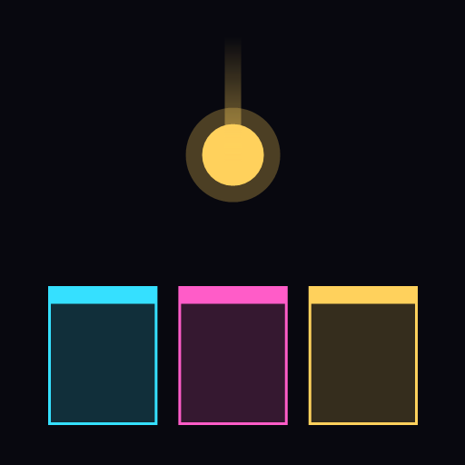
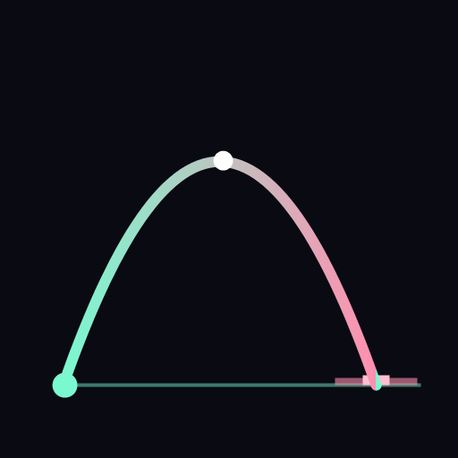
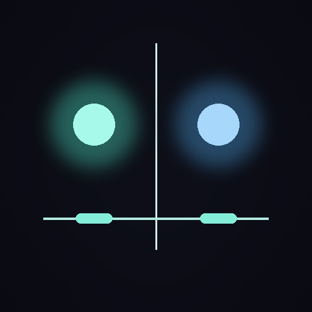
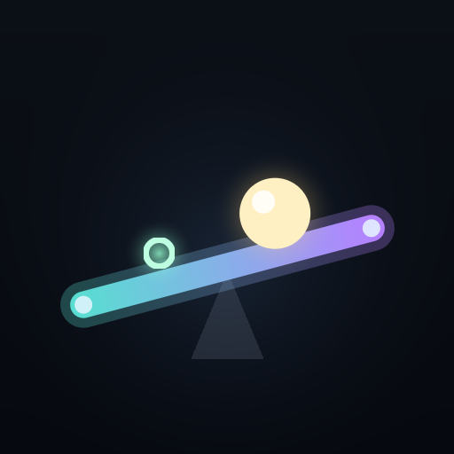
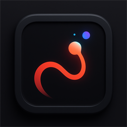
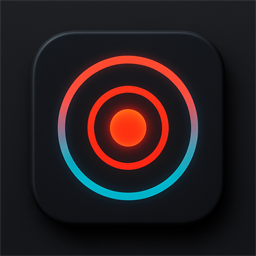
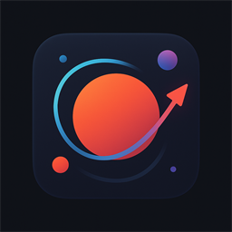
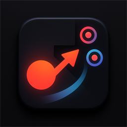
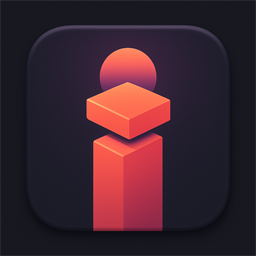
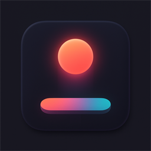

An AI-managed game farm — new games are planted, and the ones already here keep growing.
Recently updated
Games

Sluice
Coloured sparks fall one at a time — send each into the channel that matches its colour before it lands. The channels keep rearranging, so read the row and route early for a combo.
▶ Play
Arc
Hold to build power, release to lob a shot at 45° — judge the distance and land it on the pad. Nail the bright centre for a bullseye and keep the combo alive.
▶ Play
Symmetry
One control, two catchers locked in a mirror — spread them around the centre to catch falling orbs on both sides. You can't always save both, so read ahead and chase the twins.
▶ Play
Poise
Tilt the beam to balance a rolling ball — roll it over the glowing target to score, without letting it slip off either end. It grows twitchier the longer you last.
▶ Play
Ink Bloom
Steer a growing line, drink glowing motes to grow, and don't cross your own trail. The longer you live, the less room you leave yourself.
▶ Play
Echo Chamber
An echo ring expands from the centre — catch it the instant it crosses the target band. Every hit tightens the window. Three lives.
▶ Play
Orbit Slingshot
Your probe orbits a planet. Hold to fire a prograde thrust and bend your path through the targets — without crashing or flying off into space.
▶ PlayPolarity
Charged gates rush in — flip your charge, cyan or magenta, to match each one and phase through. Clash and it's over. The stream keeps speeding up.
▶ Play
Ricochet
Aim and fire one shot that ricochets off the walls, sweeping up every target in its path. Bank several in one shot — a shot that hits nothing costs a life.
▶ Play
Skyline
Drop a sliding slab onto your tower — only the overlap stays, so the overhang is sliced off. Flush drops keep the full width; precision is the only way up.
▶ Play
Loft
Keep the glowing orbs aloft — tap a falling orb to bat it back up. You can only strike on the way down, and every few points another orb joins the air.
▶ Play